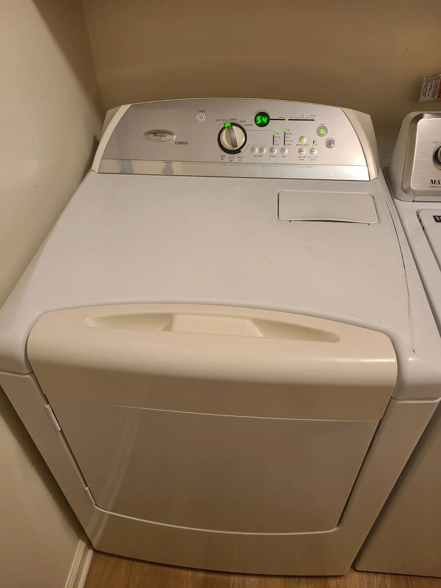
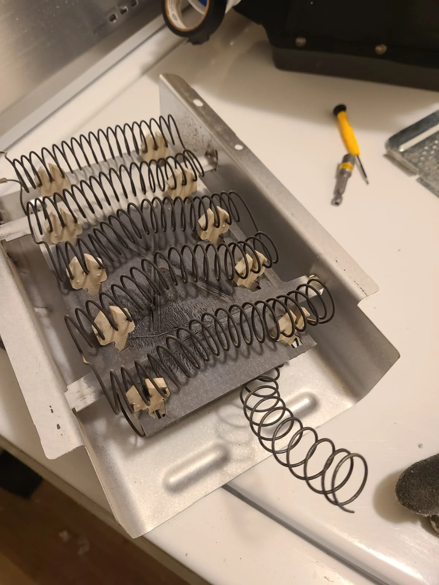
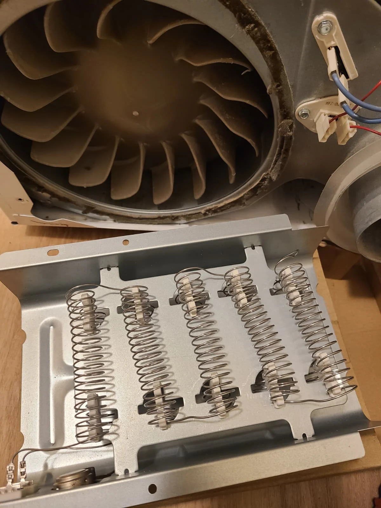
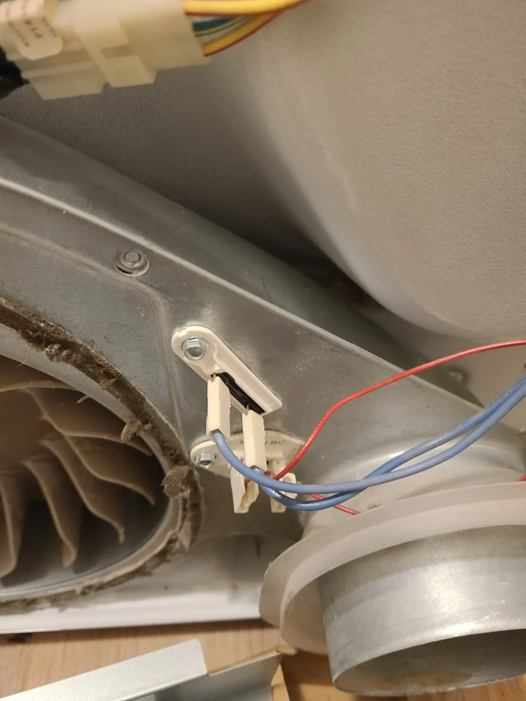
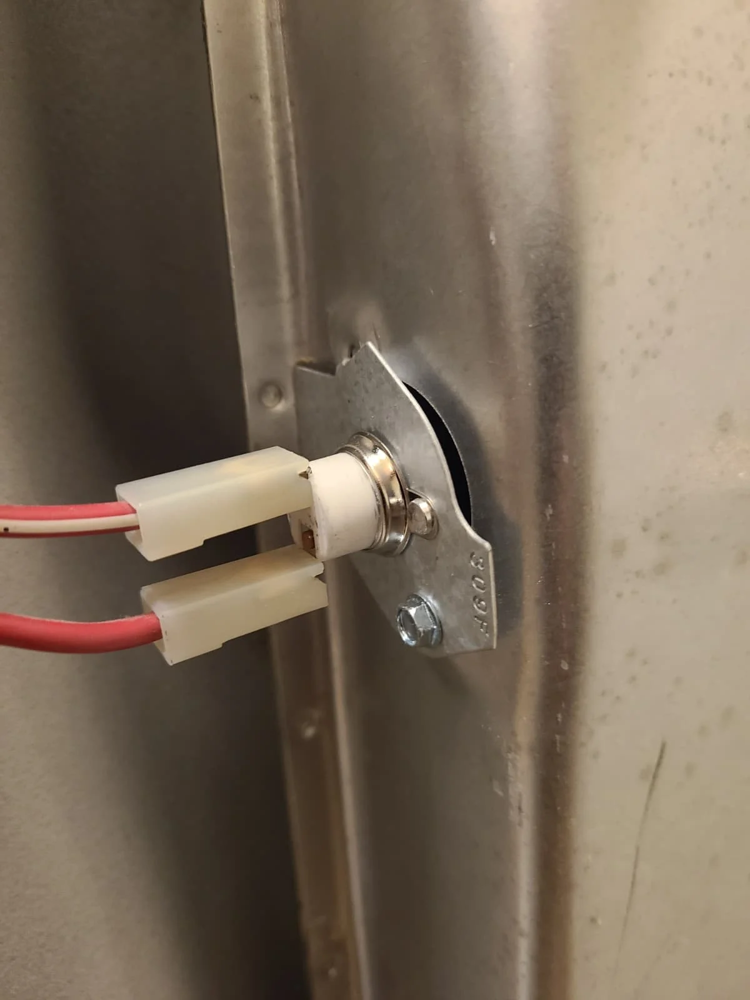
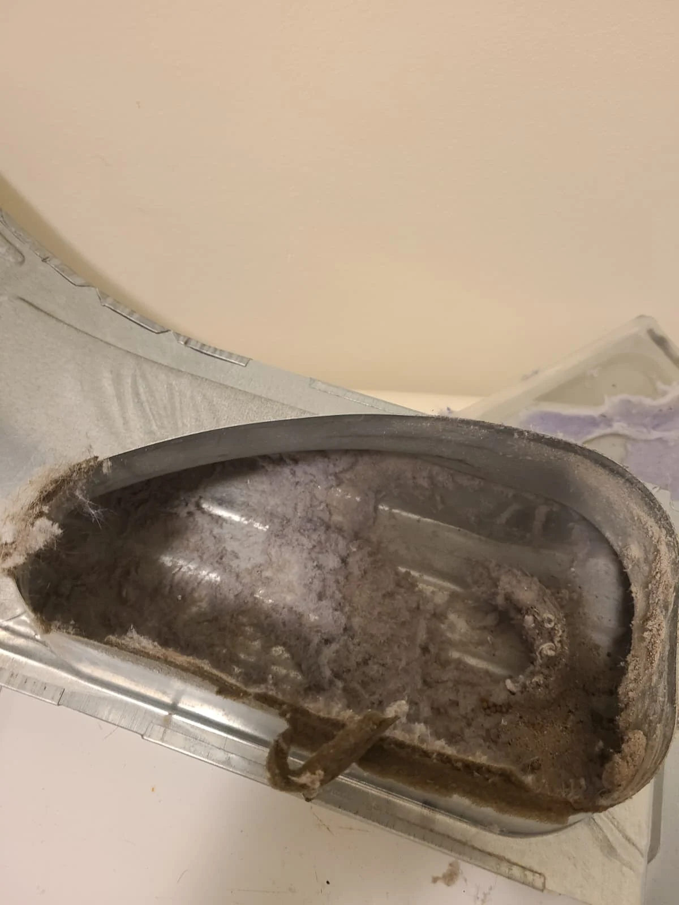
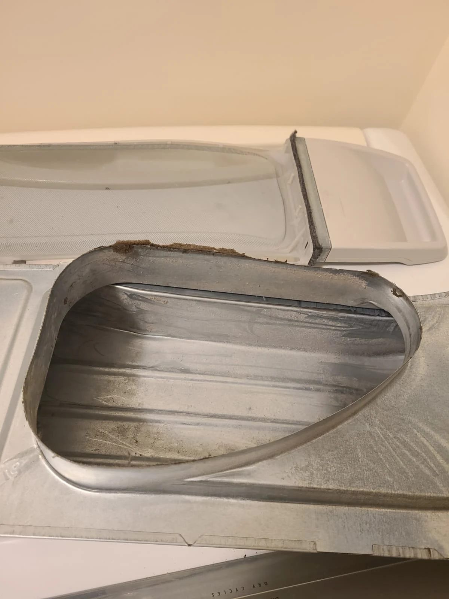

Whirlpool Cabrio Dryer Had Stopped Heating
A customer in McCordsville, Indiana, requested service because their Whirlpool dryer was not heating. The appliance was described as approximately ten years old. Diagnosis revealed a burned-out heating element, and the repair included replacement of the heater and the thermal components described below.
We also removed the lint accumulated inside the dryer. After the replacement work and reassembly, normal heating was confirmed. This local repair account is published November 3, 2026, with original photographs of the broken heater coil, replacement components and cleaning work.
Appliance Identified as Whirlpool WED6200SW1
The model printed on the appliance label is WED6200SW1. The photograph here is a crop from that label, with the serial number excluded. The machine also carries Whirlpool Cabrio branding, visible on its control panel.
For this service visit, the reported age was an estimate rather than a manufacturing date calculated from the label. The relevant complaint was loss of heat. Inspection of the actual machine established the failed heater; the replacement work was selected for this dryer rather than inferred from its age alone.
A Broken Heating Coil Confirmed the Heater Damage
The removed heating element shows a separated section of coil. This visible damage documents the burned-out heater found during diagnosis. A new heating element was installed in its place. The two service photographs show the failed component and the replacement during the work.


The repair addressed the loss of heat with component replacement, followed by an operational check. The new heater replaced the visibly damaged assembly shown above.

Thermal Fuses and Thermostats Replaced
Along with the heating element, we replaced the thermal fuses and thermostats, including the thermal cut-off. The photograph shows the thermal fuse area at the blower housing. These components were part of the completed repair, while the burned-out heating element was the specifically identified diagnostic finding.
The work included both the heat-producing element and the associated thermal components. The supplied overview diagram highlights the heater and thermal protection locations within the dryer assembly.

Thermal Cut-Off at the Heater Housing
The thermal cut-off is a heat-protection component associated with the heating assembly. It was included in the replacement work, together with the other fuses and thermostats. The close-up records the component and its connections on the heater housing during this visit.
The heating element, thermostats and thermal protection devices have different roles, so the repair description lists them separately. The supplied diagram and close-up photographs show where the serviced components fit within the appliance.
Lint Removed and Normal Heating Verified
Lint was present in the internal air passage, as the first photograph shows. We cleaned out the accumulated material during the repair. The second photograph shows the same type of passage after cleaning. This work concerned the dryer itself; household exhaust-duct cleaning is not included in this account.


After the dryer was reassembled, its heating operation was checked. Normal heat returned. The completed job in McCordsville combined heater and thermal-component replacement with internal lint removal.
Whirlpool No-Heat Repair Questions
What was wrong with this dryer?
Diagnosis found a burned-out heating element. The service photograph shows the broken coil in the removed heater.
What components were replaced?
The heating element, thermal fuses and thermostats, including the thermal cut-off, were replaced.
Was the dryer cleaned and checked?
Yes. Accumulated lint was removed, and normal heating was verified after reassembly.
Does another Whirlpool dryer with no heat need the same repair?
It needs its own diagnosis. This article documents the findings and work on one Whirlpool Cabrio WED6200SW1.
Whirlpool Dryer Service in McCordsville
If your dryer no longer heats, share the model number and describe the symptoms when arranging service. Alex Appliance Repair provides dryer repair in McCordsville. Explore our Whirlpool appliance repair services and recent local repair stories.
Alex Appliance Repair is an independent service operated by Aksenov LLC. Call (463) 248-8429 or arrange service online.
Book dryer repair in McCordsville